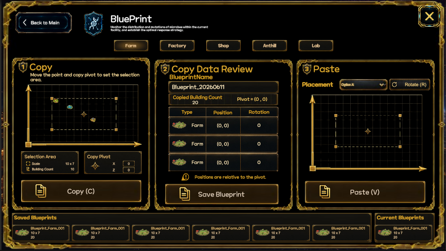

Sub System
블루프린트
진입 경로
홈
→ 서브 시스템
→ 블루프린트블루프린트 시스템에서는 배치된 건물과 시설을 영역 단위로 복사하고, 설계도로 저장한 뒤 다른 위치에 다시 설치한다.

기본 구조
블루프린트는 다음 세 단계로 구성된다.
복사 영역 지정
→ 복사 데이터 확인 및 저장
→ 설치 위치 선택 후 붙여넣기플레이어는 농장, 공장, 상점, 개미굴, 연구소의 배치 구조를 각각 블루프린트로 저장할 수 있다.
적용 구역
블루프린트는 다음 구역에 사용할 수 있다.
- 농장
- 공장
- 상점
- 개미굴
- 연구소
선택한 구역에 따라 복사할 수 있는 건물과 시설이 달라진다.
1단계: 복사
플레이어는 복사할 영역과 기준점을 지정한다.
복사 영역
- 시작 위치
- 끝 위치
- 가로 크기
- 세로 크기
- 포함된 건물 수
복사 기준점
기준점은 저장된 배치를 다른 위치에 붙여넣을 때 중심이 되는 좌표다.
복사 영역 지정
→ 기준점 지정
→ 포함 건물 확인
→ 복사2단계: 복사 데이터 확인
복사한 건물과 시설의 데이터를 확인한다.
표시 정보
- 블루프린트 이름
- 복사된 건물 수
- 기준점 좌표
- 건물 종류
- 상대 위치
- 회전값
모든 위치는 복사 기준점을 기준으로 상대 좌표로 저장된다.
건물 위치
→ 기준점 기준 상대 좌표
건물 회전
→ 저장 당시 회전값 유지확인이 끝나면 블루프린트를 저장한다.
3단계: 붙여넣기
저장된 블루프린트를 선택하고 설치할 위치를 지정한다.
배치 설정
- 설치 위치
- 회전
- 설치 가능 여부
- 필요한 자원
- 필요한 비용
회전
블루프린트 전체를 회전시켜 다른 방향으로 설치할 수 있다.
블루프린트 선택
→ 설치 위치 지정
→ 회전 설정
→ 설치 가능 여부 확인
→ 붙여넣기저장된 블루프린트
화면 하단에서는 저장된 블루프린트 목록을 확인한다.
표시 정보
- 블루프린트 이름
- 적용 구역
- 가로·세로 크기
- 건물 수
- 현재 선택 여부
저장된 블루프린트는 다시 불러오거나 다른 위치에 반복 설치할 수 있다.
블루프린트 저장 데이터
각 블루프린트에는 다음 정보가 저장된다.
블루프린트 이름
적용 구역
가로 크기
세로 크기
복사 기준점
건물 수
건물 종류
상대 좌표
회전값전체 흐름
구역 선택
→ 복사 영역 지정
→ 복사 기준점 지정
→ 건물 데이터 확인
→ 블루프린트 저장
→ 저장된 블루프린트 선택
→ 설치 위치 지정
→ 회전 설정
→ 붙여넣기메뉴 설명
블루프린트
건물과 시설의 배치 구조를 영역 단위로 복사해 저장합니다. 저장한 블루프린트는 다른 위치에서 불러오고 회전하여 동일한 구조로 다시 설치할 수 있습니다.